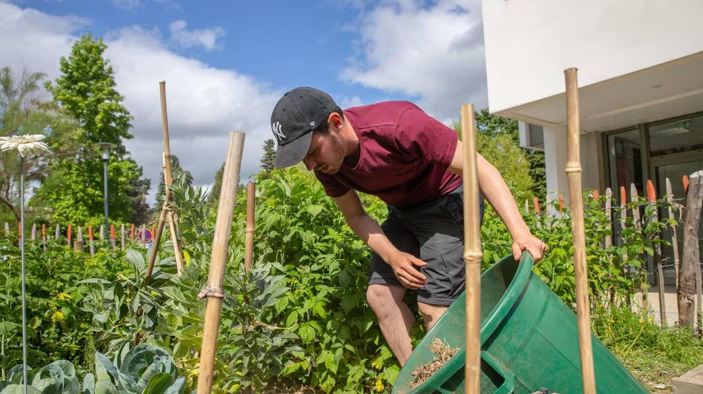
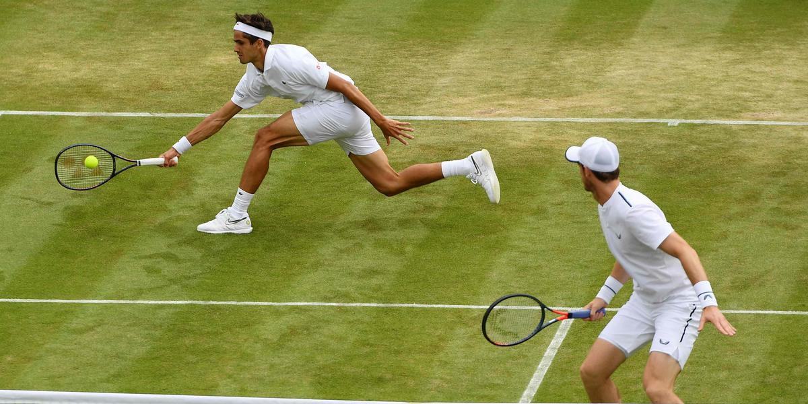

Oublidev: apprennez le C--
int main{int a, float b, c = a+b}. Vous auriez peut-être remarqué des erreurs dans ces lignes de code C++. Et si c'est le cas vous êtes soit passionné de code soit traumatisé par ces lignes et leur absence de points virgule. Et si vous êtes sur notre page internet vous connaissez comme nous la réponse et cette matière vous aidera à vous libérer.
Jardinage: découvrez de nouveaux horizons

Le jardinage est une matière que nous mettons majoritairement en avant au TUI , premièrement car elle nous permet d'économiser des coups d'entretien mais surtout car elle promeut de nombreuses valeurs utiles à la poursuite d'avenir après le TUB. L'entretien d'une parcelle permet aux élèves de developper leurs connaissances de la nature, mais aussi de plus en apprendre sur l'alimentation et autres sujets reliés.
Mathématiques: gardez des bases

Les mathématiques sont utiles dans la vie de tous les jours, et vous vous en rendrez vite compte avec l'utilité qu'elles auront dans le programme du TUB informatique. La présence de cette matière permet également a ceux qui le voudrait de garder des bases scolaires pour une potentielle poursuite d'études.
Sport : Comblez vos lacunes !

Car nous nous battons contre l'abandon progressif du sport du collège jusque à l'université, nous avons décidé de le réinstaurer dans le programme d'une formation universitaire. Nous savons qu'une pratique régulière du sport favorise l'apprentissage, alors puisque nous souhaitons le meilleur pour nos élèves, le sport est hebdomadaire.
BEW : désapprennez en restant connectés
Cette page d'accueil a-t-elle été faite avec des flexbox ou des grids ? Pourquoi utiliser une image au lieu d'un background-image ? Pourquoi ce site n'est il pas responsive ? Si vous lisez ce paragraphe, c'est surement que vous vous êtes déja posé ces questions, et que vous aimeriez vous débarasser de ces interrogations parasites et retourner à votre manière non réfléchie de naviguer sur internet ? C'est ce que vous permettront nos cours de BEW, un enseignent innovant dans le désapprentissage de l'informatique.
Relations humaines : car la connexion peut passer par ailleurs que par internet
Êtes-vous familier avec les interfaces homme-machine ? Personnellement non ! Mais peu importe puisque dans le TUB informatique, ce qui a notre plus grand intérêt est la relation humain-humain, non seulement pour la richesse personnelle qu'elle apporte mais aussi pour l'aide qu'une prestance orale apporte dans le monde professionnel. Cette matière est selon nous une des plus importantes du TUB informatique et une de nos plus grandes fiertés.